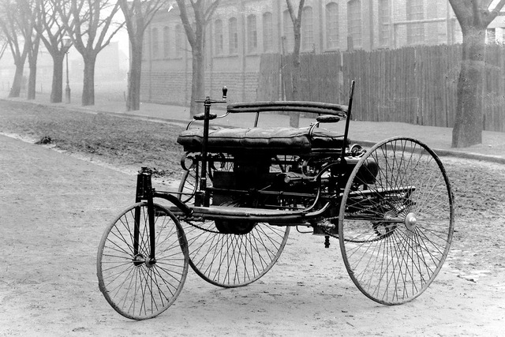
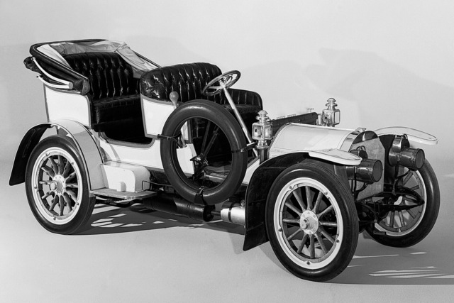

A Mercedes-Benz története az autóipar egyik korai ikonjaként kezdődött, amikor Carl Benz 1886-ban elkészítette a Benz Patent-Motorwagen-t, az első belső égésű motorral működő járművet. Ezt követően, az 1901-es Mercedes 35 hp-vel indult el a Mercedes név használata, amelyet Wilhelm Maybach tervezett. A Mercedes Simplex, amely 1902-ben jelent meg, már sorozatgyártásban készült, és több változatban és karosszériában készült. Az 1906-tól 1928-ig tartó Mercedes-Benz S-Series luxus autókat kínált az elit számára, különleges kényelemmel és teljesítménnyel. Ezek a korai modellek meghatározták a Mercedes-Benz hírnevét és presztízsét az autóiparban.
 Itt mutatjuk be személyes kedvencünket a Mercedes kínálatából.
Mercedes E63S AMG
Mercedes G65 AMG